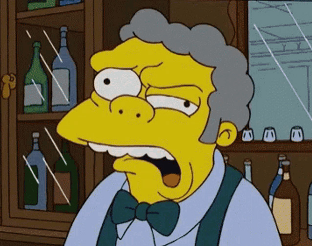
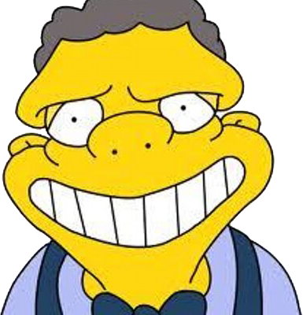
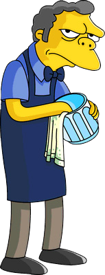
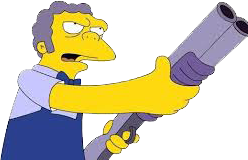
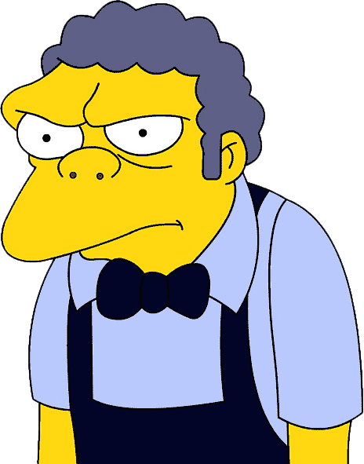
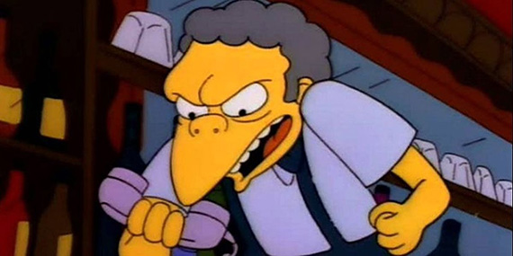

Moe Szyslak
The Most Cynical Man in Springfield
About this Scumbag

Proprietor of Moe's Tavern, Entrepreneur, Springfield local. Some might say he has a really bad attitude. Or maybe he's just a product of his environment. Serving drunkards in a run down shack isn't the best way to live, but he makes due with what he has. His religion of choice is that of a snake handler, even if he is as bad at it as he is a bartender.
Personality and Habits

Bad bartender, nihilistic, pessimist, bad temper, easily irritated, prone to violence, threatening, sometimes sentimental.
Knowledge and Skills

Business owner
Gun handling
Snake handling
Knife handling
Story reader
Poker player
Maybe some money handling skills
Known Associates

Homer Simpson
Lenny Leonard
Carl Carlson
Sam
Larry
Barney Gumble
Favourite Quotes

“Hugh Jass”
“Anita Bath”
“Maya Buttreeks”
“Moe Ron”
“Amanda Hugginkiss”
“Ivana Tinkle”
Images used via the following sources
Bio Page created by: Rob Ensign - MMP
Whenever I am asked who my favourite of anything is, I'm always left unsure of the answer. Recently my wife and I were asked this in regards to characters from the show The Simpsons
Back to Top